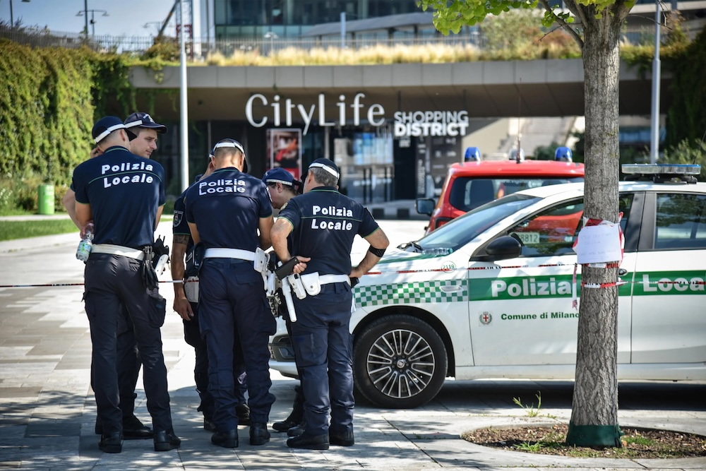
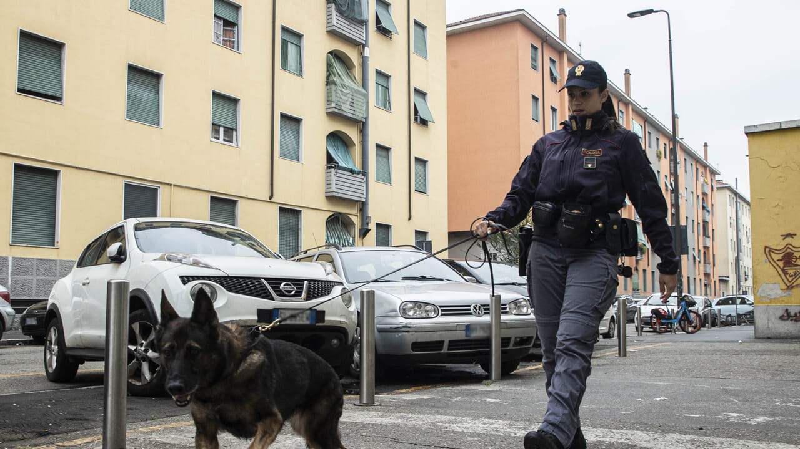
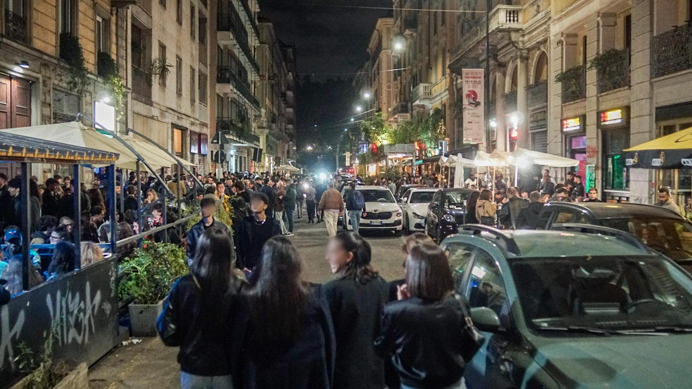
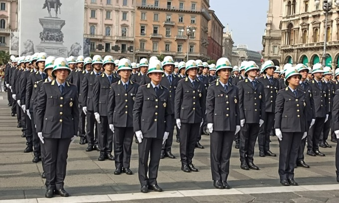

Ogni volta che a Milano avviene una rapina, un'aggressione o un episodio di violenza, sui social compare sempre la stessa frase: "È colpa di Beppe Sala." È diventato quasi un riflesso automatico.
Una narrazione semplice, immediata, perfetta per post o reel che screditano la politica e allarmano i cittadini.
Ma la realtà amministrativa è molto più complessa.
Attribuire tutti i problemi di sicurezza della città esclusivamente al sindaco significa raccontare una versione incompleta dei fatti. Così come sarebbe altrettanto scorretto sostenere che il Comune non abbia alcuna responsabilità.
Facciamo chiarezza su quali sono le responsabilità
La sicurezza urbana è il risultato dell'azione di istituzioni diverse, ciascuna con competenze specifiche.
L'ordine pubblico, il coordinamento di Polizia di Stato e Carabinieri e l'impiego delle forze dell'ordine dipendono infatti dal Ministero dell'Interno, attraverso il Prefetto. È il Governo che decide organici, strategie nazionali e risorse destinate alle forze di polizia.

Il Comune, invece, opera su un piano differente ma tutt'altro che marginale. Gestisce la Polizia Locale, interviene sulla sicurezza urbana, sulla prevenzione, sulla qualità dello spazio pubblico, sulle politiche giovanili, sulla mediazione territoriale, sul coordinamento con associazioni e realtà sociali, sulla vivibilità dei quartieri e sulla capacità di costruire un rapporto di fiducia tra istituzioni e cittadini.
Ridurre tutto a "Sala sì" o "Sala no" significa quindi non comprendere come funziona realmente una grande città.
Se davvero si vuole analizzare chi, negli ultimi anni, ha avuto la responsabilità politica di questi temi all'interno del Comune di Milano, allora non basta pronunciare il nome del sindaco.
Per molti anni Anna Scavuzzo ha ricoperto il ruolo di vicesindaca con deleghe che hanno compreso anche la Sicurezza, oltre alle Politiche giovanili. Si tratta di incarichi che non consistono soltanto nel coordinare uffici amministrativi, ma nel costruire una strategia politica: dialogare con i quartieri, interpretare e reagire al disagio sociale, favorire la prevenzione, coordinare le politiche comunali e contribuire a far percepire ai cittadini che esiste una direzione chiara.
Quando oggi una parte consistente dei milanesi dichiara di sentirsi meno sicura rispetto al passato, quella percezione non nasce dal nulla. Può dipendere da fattori economici, sociali, culturali e criminali, ma rappresenta anche un indicatore della capacità delle istituzioni di governare questi fenomeni. È quindi legittimo chiedersi se chi ha avuto queste deleghe abbia raggiunto gli obiettivi che la città si aspettava.
Lo stesso ragionamento vale oggi per Michele Albiani, presidente della Commissione Sicurezza, Coesione Sociale e Politiche della Notte del Comune di Milano.

«Una commissione comunale non arresta i criminali e non decide quanti agenti della Polizia di Stato saranno presenti in città.»
Il suo compito dovrebbe essere un altro: ascoltare il territorio, elaborare proposte, creare un dialogo e mediare conflitti tra istituzioni, cittadini, esercenti, operatori culturali e associazioni, individuare criticità e contribuire a orientare le politiche comunali.
Se però la distanza tra cittadini e istituzioni continua ad aumentare, se il dibattito pubblico sulla sicurezza è sempre più confuso e polarizzato e se una parte crescente della popolazione percepisce un peggioramento della qualità della vita, è inevitabile interrogarsi anche sull'efficacia di questo lavoro politico.
Il caso di Porta Venezia
Se esiste un quartiere che racconta meglio di ogni altro il limite delle politiche comunali sulla sicurezza urbana, probabilmente è Porta Venezia, e in particolare l'area di via Lecco.

Da anni residenti, commercianti e associazioni segnalano problemi legati a malamovida, microcriminalità, borseggi, aggressioni, degrado e convivenza tra vita notturna e quartiere, tanto da rendere necessari tavoli istituzionali e interventi dedicati.
Non è un tema marginale. Era uno dei punti presenti anche nel programma politico di Michele Albiani, che indicava proprio Porta Venezia come un quartiere sul quale costruire maggiore dialogo con residenti, esercenti e istituzioni e sviluppare strategie per migliorarne sicurezza e vivibilità.
A distanza di anni, è quindi legittimo domandarsi: quali risultati concreti siano stati raggiunti?
Una commissione comunale non arresta i criminali, ma ha il compito di analizzare e prevenire i problemi, favorire il confronto tra le parti e contribuire a costruire politiche pubbliche efficaci.
Se uno dei quartieri simbolo di "Milano inclusiva" continua a essere al centro di tensioni e criticità, è inevitabile che anche il lavoro politico svolto su quel territorio diventi oggetto di valutazione.
Milano vive trasformazioni profonde: aumento delle disuguaglianze, crisi abitativa, disagio giovanile, emergenza salute mentale e dipendenze, immigrazione, povertà, pressione sul sistema dei trasporti, turismo, movida, carenza di organici nelle forze dell'ordine e cambiamenti sociali che riguardano l'intero Paese.
Pensare che un singolo amministratore possa determinare, da solo, il destino della sicurezza cittadina sarebbe altrettanto semplicistico.
Ma proprio perché il problema è complesso, è fondamentale che il dibattito pubblico smetta di semplificarlo.
"I cittadini hanno il diritto di sapere chi è responsabile di cosa. Hanno il diritto di sapere quali decisioni spettano al Governo e quali al Comune. Hanno il diritto di sapere quali sono i compiti del Prefetto, della Polizia Locale, della Commissione Sicurezza, degli assessori e dei vicesindaci."
Solo conoscendo il funzionamento delle istituzioni è possibile chiedere conto delle decisioni alle persone giuste, avanzare proposte credibili e migliorare davvero la città.
Quando invece tutto viene ridotto a uno slogan, a un post virale o a un meme politico, si ottiene l'effetto opposto: cresce la confusione, aumentano le tifoserie e diminuisce la possibilità di affrontare seriamente i problemi.
La sicurezza non è un meme elettorale
Negli ultimi anni la politica italiana — tanto a destra quanto a sinistra — ha investito enormemente nella comunicazione. Si producono contenuti sempre più efficaci, slogan sempre più condivisibili, video sempre più virali. Ma la qualità della comunicazione non può sostituire la qualità del governo.
Perché amministrare una città non significa vincere una discussione sui social.
Significa conoscere le proprie competenze, assumersi le proprie responsabilità, collaborare con le altre istituzioni e spiegare ai cittadini, con trasparenza, come funziona davvero la macchina pubblica.

Solo da questa consapevolezza può nascere un dibattito maturo. E solo un dibattito maturo può produrre politiche migliori.
"Il resto sono reel e like."